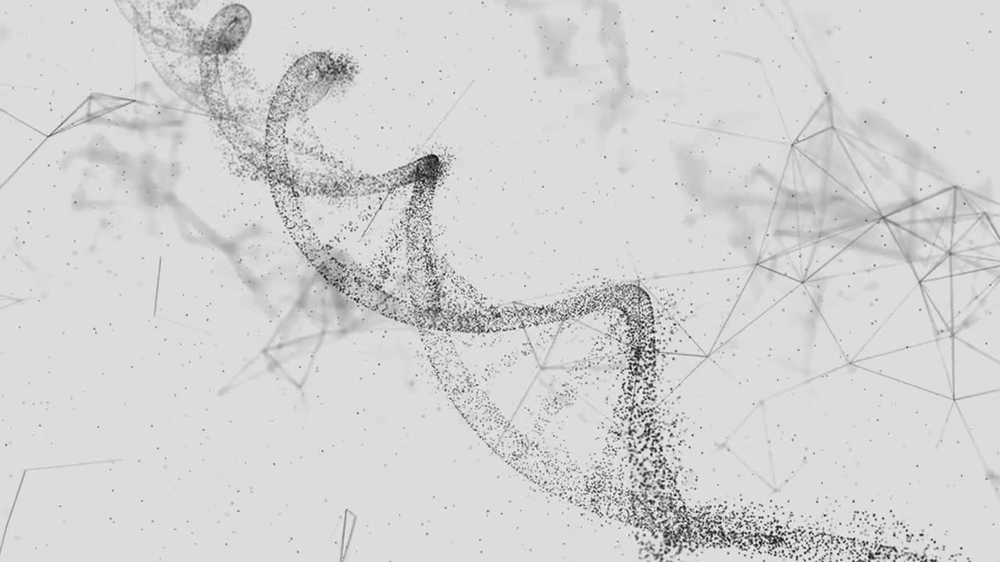

Overview ／ 概況
Checklist ／ 檢核進度
完成（點一下切換）
進行中 / 排程中
未開始
／ 燈號
綠燈 ≥70
黃燈 50–69
紅燈 <50
點格子切換 未開始 → 完成 → 進行中；「＋備註」可填日期。

全鑫分會管理網站 ／ 新會員出村檢核
17 項出村檢核，導師即時共用同一份資料。
新會員出村檢核
Overview ／ 概況
Checklist ／ 檢核進度
點格子切換 未開始 → 完成 → 進行中；「＋備註」可填日期。